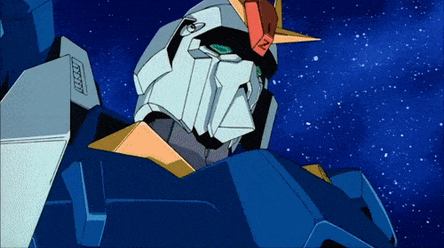
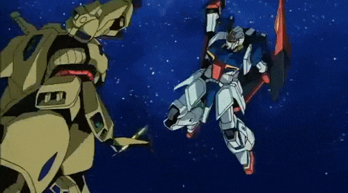
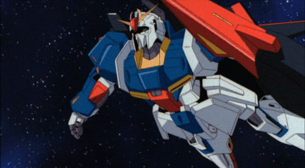

Zeta Gundam
More Info
The second Gundam protaganist, Zeta Gundam, follows a pilot named Kamille Bidan who is a civilian teenager during his timelines events. It follows a story after the original Gundam, being more of an advanced version of its predecessor.